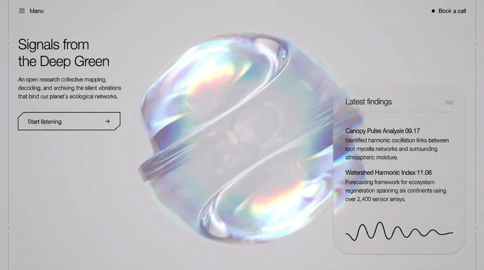

Planetary Pulse
Sciencescienceyilai-ai 公开页面
收录时间：2026-08-17正文：26,987 字符

本地预览图 · jpeg
完整提示词
Build a single-screen, non-scrolling hero landing page called **Terranova — Signals from the Deep Green**. It is a full-bleed looping background video with a real-time refractive "liquid glass" card floating over it, plus a slide-in fullscreen menu. Vanilla HTML/CSS/JS only — **no frameworks, no build step, no Three.js, no WebGL, no canvas 3D**. The glass effect is done entirely with an SVG filter plus a 2D canvas that re-draws the video every frame.
Produce exactly five files: `index.html`, `styles.css`, `glass-card.js`, `ui.js`, `serve.mjs`.
---
## 1. Global setup
### Fonts
In `<head>`, in this order:
```html
<link rel="preconnect" href="https://fonts.googleapis.com" />
<link rel="preconnect" href="https://fonts.gstatic.com" crossorigin />
<link rel="stylesheet" href="https://db.onlinewebfonts.com/c/0e6de1ec911a2e267ff136bbdd384a44?family=Helvetica+Neue+Light" />
<link rel="stylesheet" href="./styles.css" />
```
Font stack on `html, body`:
`'Helvetica Neue Light', 'Helvetica Neue', Helvetica, Arial, sans-serif`
with `-webkit-font-smoothing: antialiased` and `-moz-osx-font-smoothing: grayscale`.
Page title: `Terranova — Signals from the Deep Green` (em dash).
`<html lang="en">`, `<meta charset="UTF-8">`, `<meta name="viewport" content="width=device-width, initial-scale=1.0">`.
### Reset
```css
html, body { width: 100%; height: 100%; overflow: hidden; background: #c2ccd3; color: #000; overflow-x: hidden; }
```
`#c2ccd3` is only a pre-load fallback behind the video. The page never scrolls.
Breakpoints follow Tailwind's: **sm 640px, md 768px, lg 1024px**, all `min-width` (mobile-first).
---
## 2. Background video
First element inside `<body>`:
```html
<video id="bg-video" class="bg-video" aria-hidden="true"
autoplay muted loop playsinline preload="auto"
src="https://d8j0ntlcm91z4.cloudfront.net/user_38xzZboKViGWJOttwIXH07lWA1P/hf_20260816_125506_3a597378-ec85-4ebd-bd22-03b45508ac62.mp4"></video>
```
That exact URL. The asset is 1920×1080, ~10.04s, a bright iridescent soap-bubble / glass-sphere loop on a near-white studio background.
**Do not set `crossorigin`.** The host serves no CORS headers; adding the attribute breaks loading outright. Without it the video plays and can still be drawn into a canvas — the canvas just becomes tainted, which is fine because nothing ever reads pixels back.
```css
.bg-video {
position: fixed; top: 0; left: 0;
display: block;
width: 100%; height: 100%;
object-fit: cover;
z-index: 0;
opacity: 1;
pointer-events: none;
}
```
**100% opacity. No overlay, scrim, tint, gradient, or darkening layer of any kind over the video, at any breakpoint.**
---
## 3. The liquid-glass SVG filter
Immediately after the video, an off-screen SVG holding the filter def:
```html
<svg class="glass-defs" width="0" height="0" aria-hidden="true" focusable="false">
<defs>
<filter id="liquid-glass-refraction"
x="-30%" y="-30%" width="160%" height="160%"
color-interpolation-filters="sRGB">
<feTurbulence type="fractalNoise" baseFrequency="0.012 0.015" numOctaves="3" result="noise" />
<feColorMatrix in="SourceAlpha" type="matrix" result="boosted_alpha"
values="0 0 0 0 0
0 0 0 0 0
0 0 0 0 0
0 0 0 100 0" />
<feGaussianBlur in="boosted_alpha" stdDeviation="45" result="blurred_alpha" />
<feComponentTransfer in="blurred_alpha" result="edge_mask">
<feFuncA type="linear" slope="-1.3" intercept="1" />
</feComponentTransfer>
<feComposite in="noise" in2="edge_mask" operator="arithmetic"
k1="1" k2="0" k3="0" k4="0" result="masked_noise" />
<!-- chromatic dispersion: one displacement pass per channel -->
<feDisplacementMap in="SourceGraphic" in2="masked_noise" scale="65"
xChannelSelector="R" yChannelSelector="G" result="red_displaced" />
<feColorMatrix in="red_displaced" type="matrix" result="red"
values="1 0 0 0 0
0 0 0 0 0
0 0 0 0 0
0 0 0 1 0" />
<feDisplacementMap in="SourceGraphic" in2="masked_noise" scale="56"
xChannelSelector="R" yChannelSelector="G" result="green_displaced" />
<feColorMatrix in="green_displaced" type="matrix" result="green"
values="0 0 0 0 0
0 1 0 0 0
0 0 0 0 0
0 0 0 1 0" />
<feDisplacementMap in="SourceGraphic" in2="masked_noise" scale="47"
xChannelSelector="R" yChannelSelector="G" result="blue_displaced" />
<feColorMatrix in="blue_displaced" type="matrix" result="blue"
values="0 0 0 0 0
0 0 0 0 0
0 0 1 0 0
0 0 0 1 0" />
<feBlend in="red" in2="green" mode="screen" result="rg" />
<feBlend in="rg" in2="blue" mode="screen" result="chromatic_dispersion" />
</filter>
</defs>
</svg>
```
```css
.glass-defs { position: absolute; width: 0; height: 0; pointer-events: none; }
```
**How it works** — reproduce the reasoning, not just the values:
1. `feTurbulence` makes a static fractal-noise field: the refraction normal map.
2. `SourceAlpha` is pushed to full opacity (alpha row `0 0 0 100 0`), blurred by 45, then inverted by `feFuncA slope="-1.3" intercept="1"`. That yields an **edge mask** — near 0 in the element's interior, rising toward its borders.
3. The noise is multiplied by that mask (`feComposite` arithmetic, `k1=1`), so displacement is strong at the rim and near-nil in the middle. That is what reads as a thick glass bevel.
4. `SourceGraphic` is displaced **three times at different strengths — 65 / 56 / 47** — and each pass is masked down to a single channel (R, G, B), then recombined with two `screen` blends. The per-channel offset spread is the chromatic aberration / rainbow fringing.
5. The `-30% / 160%` filter region gives the blur and displacement room to work past the element bounds.
Scales `65 / 56 / 47`, `stdDeviation="45"`, `baseFrequency="0.012 0.015"`, `numOctaves="3"`, and `slope="-1.3"` are all tuned — keep them exact.
---
## 4. Page structure
```
<body>
<video.bg-video>
<svg.glass-defs> ← filter def
<main.hero>
<div.rule.rule--left> ← desktop-only vertical rule
<div.rule.rule--right>
<nav.nav> ← top bar
<div.hero-bottom>
<div.lede> ← left column
<aside.card[data-glass-card]> ← right column, the glass card
<div.menu#menu> ← slide-in overlay
<script type="module" src="./glass-card.js">
<script type="module" src="./ui.js">
```
```css
.hero {
position: relative; z-index: 10;
display: flex; flex-direction: column;
width: 100%; height: 100vh; height: 100dvh;
color: #000;
pointer-events: none; /* only interactive children opt back in */
}
.icon { flex: none; }
```
Every interactive descendant re-enables `pointer-events: auto` individually.
---
## 5. Vertical rules (≥768px only)
Two identical decorative columns, `aria-hidden`, each containing five spans in order:
`seg--end`, `plus`, `seg--mid`, `plus`, `seg--end`, where each `plus` is a literal `+` character.
```css
.rule { position: absolute; top: 0; bottom: 0; display: none; flex-direction: column; align-items: center; }
.rule--left { left: 1.25rem; }
.rule--right { right: 1.25rem; }
.rule__seg { width: 1px; background: rgba(0, 0, 0, 0.2); }
.rule__seg--end { height: 15%; }
.rule__seg--mid { flex: 1 1 0%; }
.rule__plus { font-size: 0.75rem; line-height: 1; color: rgba(0, 0, 0, 0.4); padding: 0.25rem 0; }
@media (min-width: 768px) { .rule { display: flex; } }
```
---
## 6. Navbar
Left: a `<button id="menu-open" aria-expanded="false" aria-controls="menu">` with a 20×20 three-line hamburger SVG + label **"Menu"**.
Right: an `<a href="#">` with an 8px black dot + label **"Book a call"**.
All icons in the page share one convention: `viewBox="0 0 24 24"`, `fill="none"`, `stroke="currentColor"`, `stroke-width="1.5"`, `stroke-linecap="round"`, `stroke-linejoin="round"`.
Hamburger = three `<line>`s at y = 6, 12, 18, x from 4 to 20.
```css
.nav { position: relative; z-index: 2; display: flex; align-items: center; justify-content: space-between; padding: 1.25rem; }
.nav__item {
display: inline-flex; align-items: center; gap: 0.625rem;
color: #000; background: none; border: 0; font: inherit; text-decoration: none;
cursor: pointer; pointer-events: auto; transition: opacity 300ms;
}
.nav__item:hover { opacity: 0.6; }
.nav__label { font-size: 0.875rem; line-height: 1.25rem; letter-spacing: 0.025em; }
.nav__label--menu { display: none; } /* hamburger is icon-only on mobile */
.nav__dot { width: 8px; height: 8px; border-radius: 9999px; background: #000; }
@media (min-width: 640px) { .nav { padding: 1.25rem 1.5rem; } .nav__label--menu { display: inline; } }
@media (min-width: 768px) { .nav { padding: 1.5rem 3rem; } }
```
---
## 7. Bottom row layout
```css
.hero-bottom {
position: relative; z-index: 2;
margin-top: auto;
display: flex; flex-direction: column; gap: 1.5rem;
padding: 0 1.25rem 1.5rem; /* matches .nav so columns align with the navbar */
}
@media (min-width: 640px) { .hero-bottom { padding: 0 1.5rem 2rem; } }
@media (min-width: 768px) {
.hero-bottom {
flex: 1; margin-top: 0;
flex-direction: row; align-items: stretch; justify-content: space-between;
gap: 3rem; padding: 2rem 3rem 3rem;
}
.lede { align-self: flex-start; } /* copy pinned top-left */
.card { align-self: flex-end; } /* card pinned bottom-right */
}
```
Below 768px it stacks vertically, pushed to the bottom by `margin-top: auto`. At ≥768px it becomes a full-height row with the copy top-left and the card bottom-right — the diagonal is the whole composition.
**No scrim / no `::before` overlay on `.hero-bottom`.** Text is dark at every width.
---
## 8. Left column — copy
```html
<div class="lede">
<h1 class="lede__title">Signals from<br />the Deep Green</h1>
<p class="lede__body">
An open research collective mapping, decoding, and archiving the silent
vibrations that bind our planet's ecological networks.
</p>
<a class="chamfer" href="#"> … </a>
</div>
```
Keep the `<br />` after "Signals from" and the curly apostrophe in "planet's".
```css
.lede { max-width: 24rem; }
.lede__title { font-size: 1.25rem; font-weight: 300; line-height: 1.25; letter-spacing: -0.025em; color: #000; }
.lede__body { margin-top: 0.75rem; max-width: 280px; font-size: 0.75rem; line-height: 1.625; color: rgba(0, 0, 0, 0.6); }
@media (min-width: 640px) { .lede__title { font-size: 1.5rem; } .lede__body { font-size: 0.875rem; } }
@media (min-width: 768px) { .lede__title { font-size: 1.875rem; } .lede__body { margin-top: 1rem; } }
@media (min-width: 1024px) { .lede__title { font-size: 2.25rem; } }
```
Title `#000` and body `rgba(0,0,0,0.6)` at **all** widths — mobile included. Only sizes change across breakpoints.
---
## 9. Chamfered "Start listening" button
Four stacked layers inside one `<a class="chamfer">`:
```html
<a class="chamfer" href="#">
<span class="chamfer__glass" aria-hidden="true"></span>
<svg class="chamfer__outline" viewBox="0 0 260 48" preserveAspectRatio="none" aria-hidden="true">
<polygon points="14,0 260,0 260,34 246,48 0,48 0,14"
fill="none" stroke="currentColor" stroke-width="1.5" vector-effect="non-scaling-stroke" />
</svg>
<span class="chamfer__label">Start listening</span>
<svg class="icon" width="16" height="16" viewBox="0 0 24 24" fill="none" stroke="currentColor"
stroke-width="1.5" stroke-linecap="round" stroke-linejoin="round" aria-hidden="true">
<path d="M5 12h14" /><path d="m12 5 7 7-7 7" />
</svg>
</a>
```
The silhouette is a rectangle with two opposite corners cut at 14px — **top-left and bottom-right**. `vector-effect="non-scaling-stroke"` keeps the 1.5px stroke even though `preserveAspectRatio="none"` stretches the viewBox.
```css
.chamfer {
position: relative; display: flex; align-items: center; justify-content: space-between;
width: 220px; height: 44px; margin-top: 1.5rem; padding: 0 1.25rem;
color: #000; text-decoration: none; pointer-events: auto; transition: opacity 300ms;
}
.chamfer:hover { opacity: 0.7; }
/* mobile-only frosted backing, clipped to the same chamfer silhouette */
.chamfer__glass {
position: absolute; inset: 0;
background: rgba(255, 255, 255, 0.6);
backdrop-filter: blur(12px); -webkit-backdrop-filter: blur(12px);
border: 1px solid rgba(0, 0, 0, 0.2);
clip-path: polygon(14px 0, 100% 0, 100% calc(100% - 14px), calc(100% - 14px) 100%, 0 100%, 0 14px);
}
.chamfer__outline { position: absolute; inset: 0; width: 100%; height: 100%; overflow: visible; }
.chamfer__label { position: relative; font-size: 0.75rem; letter-spacing: 0.025em; }
.chamfer .icon { position: relative; }
@media (min-width: 640px) {
.chamfer { width: 260px; height: 48px; padding: 0 1.5rem; }
.chamfer__label { font-size: 0.875rem; }
.chamfer__glass { background: transparent; backdrop-filter: none; -webkit-backdrop-filter: none; border-color: transparent; }
}
@media (min-width: 768px) { .chamfer { margin-top: 2rem; } }
```
Note the inversion: the frosted fill exists **only below 640px**; at ≥640px it dissolves and just the hairline outline remains.
---
## 10. Right column — the liquid-glass card
```html
<aside class="card group" data-glass-card>
<div id="dup-video-container"><canvas id="dup-image"></canvas></div>
<div class="card__frost" aria-hidden="true"></div>
<div class="card__head">
<h2 class="card__title">Latest findings</h2>
<span class="card__index">//02</span>
</div>
<div class="card__body">
<div class="finding">
<h3 class="finding__title">Canopy Pulse Analysis 09.17</h3>
<p class="finding__text">Identified harmonic oscillation links between root mycelia networks and surrounding atmospheric moisture.</p>
</div>
<div class="finding">
<h3 class="finding__title">Watershed Harmonic Index 11.06</h3>
<p class="finding__text">Forecasting framework for ecosystem regeneration spanning six continents using over 2,400 sensor arrays.</p>
</div>
</div>
<svg class="card__wave" viewBox="0 0 220 50" fill="none" aria-hidden="true">
<path d="M0 30 C10 30 12 45 18 45 C24 45 26 10 34 10 C42 10 44 40 52 40 C60 40 62 5 70 5 C78 5 80 42 88 42 C96 42 98 15 106 15 C114 15 116 38 124 38 C132 38 134 20 142 20 C150 20 152 35 160 35 C168 35 170 22 178 22 C186 22 188 32 196 32 C204 32 210 28 220 28"
stroke="black" stroke-width="1.8" stroke-linecap="round" fill="none" />
</svg>
</aside>
```
The wave is a static hand-authored waveform — irregular amplitudes, decaying left to right. Copy the `d` verbatim.
Three stacking layers inside the card: refracted duplicate at `z-index: 0`, frost sheen at `1`, all text/wave at `2`.
```css
.card {
position: relative;
display: flex; flex-direction: column; justify-content: space-between;
width: 340px; max-width: 100%; height: 460px;
padding: 2rem;
border-radius: 48px;
overflow: hidden; /* clips the duplicate to the card */
background: transparent; /* the refraction IS the fill */
border: 1px solid rgba(47, 47, 47, 0.15);
pointer-events: auto;
animation: fade-slide-up-card 900ms cubic-bezier(0.16, 1, 0.3, 1) both;
}
@keyframes fade-slide-up-card {
from { opacity: 0; transform: translateY(28px); }
to { opacity: 1; transform: translateY(0); }
}
/* full-viewport-aligned copy of the backdrop; left/top/width/height are written every frame by glass-card.js */
#dup-video-container { position: absolute; left: 0; top: 0; z-index: 0; overflow: hidden; pointer-events: none; }
#dup-image { position: absolute; inset: 0; width: 100%; height: 100%; filter: url(#liquid-glass-refraction); }
.card__frost {
position: absolute; inset: 0; z-index: 1;
border-radius: 48px; pointer-events: none;
background: rgba(255, 255, 255, 0.05);
box-shadow: inset 0 1.5px 2px rgba(255, 255, 255, 0.3),
inset 0 -1px 2px rgba(0, 0, 0, 0.15);
transition: background 400ms;
}
.card.group:hover .card__frost { background: rgba(255, 255, 255, 0.1); }
.card__head, .card__body, .card__wave { position: relative; z-index: 2; }
.card__head { display: flex; align-items: baseline; justify-content: space-between; gap: 1rem;
padding-bottom: 0.75rem; border-bottom: 1px solid rgba(0, 0, 0, 0.1); }
.card__title { font-size: 1rem; font-weight: 500; letter-spacing: -0.025em; }
.card__index { font-size: 0.75rem; color: rgba(0, 0, 0, 0.4); }
.card__body { display: flex; flex-direction: column; gap: 1rem; margin-top: 1rem; }
.finding__title { font-size: 0.875rem; font-weight: 600; letter-spacing: -0.025em; }
.finding__text { margin-top: 0.25rem; font-size: 0.75rem; line-height: 1.625; color: rgba(0, 0, 0, 0.5); }
.card__wave { display: block; width: 100%; height: auto; margin-top: 1.25rem; }
@media (min-width: 640px) { .card__title { font-size: 1.125rem; } }
@media (min-width: 768px) {
.card__head { padding-bottom: 1rem; }
.card__title { font-size: 1.25rem; }
.card__body { gap: 1.25rem; margin-top: 1.25rem; }
.finding__title { font-size: 1rem; }
.finding__text { font-size: 0.875rem; margin-top: 0.375rem; }
.card__wave { margin-top: 1.5rem; }
}
```
---
## 11. `glass-card.js` — the frame sync
This is the load-bearing trick. **The card is a window onto a refracted duplicate of the background video.**
Each animation frame:
1. Measure the card with `getBoundingClientRect()`; bail if it has no size, or if `video.videoWidth/videoHeight` are still 0.
2. Position `#dup-video-container` at `left: -rect.left`, `top: -rect.top`, sized to `document.documentElement.clientWidth/clientHeight`. Because it is absolutely positioned inside the card, that negative offset lands it exactly over the viewport origin — its pixels line up 1:1 with the real video behind the card. The card's `overflow: hidden` + `border-radius: 48px` do all the clipping.
3. Resize `#dup-image` to viewport size at `DUP_PIXEL_RATIO = 1` (only when it actually changed).
4. Draw the current video frame into it, reproducing `object-fit: cover`:
```js
const cover = Math.max(vw / video.videoWidth, vh / video.videoHeight);
const sw = vw / cover, sh = vh / cover;
const sx = (video.videoWidth - sw) / 2, sy = (video.videoHeight - sh) / 2;
ctx.drawImage(video, sx, sy, sw, sh, 0, 0, w, h);
```
Wrap in `try/catch` — a frame may not be decodable yet.
5. The canvas carries `filter: url(#liquid-glass-refraction)` in CSS, so the browser refracts it on composite.
Drive it with a self-starting `requestAnimationFrame` loop; the module runs itself, no exports needed.
**Two comments worth preserving, because both encode non-obvious decisions:**
- Sizing the duplicate to the **viewport** rather than to the card is deliberate. The filter shifts each colour channel by a different amount, so the filtered element's own leading edges show hard channel-separation bands. At viewport size those bands fall outside the card and only clean refraction shows.
- The duplicate stays at **1× even on retina**: the SVG filter's cost scales with pixel count, and what shows through is a soft refraction where 4× the filter work buys nothing.
---
## 12. `ui.js` — the menu
Markup: `#menu` > `#menu-backdrop` + `.menu__panel`, panel holding a `#menu-close` button (20×20 X icon, two paths `M18 6 6 18` and `m6 6 12 12`, label "Close"), a `.menu__nav` of five `.menu__link`s, and a `.menu__foot`.
Links, in order: **About, Research, Projects, Journal, Contact** — each a `.menu__linkText` span plus a 16×16 right-arrow (`M5 12h14` + `m12 5 7 7-7 7`) with class `menu__arrow icon`.
Foot: label **"Get in touch"** over `<a class="menu__mail" href="mailto:hello@terranova.earth">hello@terranova.earth</a>`.
Behaviour — a single `setMenu(open)` that toggles `.is-open` on `#menu`, mirrors it to `aria-expanded` on the open button, and moves focus (`{ preventScroll: true }`) to the close button on open / back to the open button on close. Wire: open button, close button, backdrop click, every link click (closes), and `Escape` — Escape only acts while open.
```css
.menu { position: fixed; inset: 0; z-index: 50; visibility: hidden; pointer-events: none;
transition: visibility 0s linear 500ms; }
.menu.is-open { visibility: visible; pointer-events: auto; transition-delay: 0s; }
.menu__backdrop { position: absolute; inset: 0; background: rgba(0, 0, 0, 0.4);
backdrop-filter: blur(4px); -webkit-backdrop-filter: blur(4px);
opacity: 0; transition: opacity 500ms; }
.menu.is-open .menu__backdrop { opacity: 1; }
.menu__panel { position: absolute; top: 0; left: 0; display: flex; flex-direction: column;
width: 100%; height: 100%; padding: 1.5rem 2rem; background: #f5f4f0;
transform: translateX(-100%);
transition: transform 500ms cubic-bezier(0.16, 1, 0.3, 1); }
.menu.is-open .menu__panel { transform: translateX(0); }
@media (min-width: 640px) { .menu__panel { width: 380px; padding: 1.5rem 2.5rem; } }
.menu__close { display: inline-flex; align-items: center; gap: 0.625rem; align-self: flex-start;
margin-bottom: 3rem; background: none; border: 0; font: inherit; font-size: 0.875rem;
color: #000; cursor: pointer; transition: opacity 300ms; }
.menu__close:hover { opacity: 0.6; }
.menu__nav { display: flex; flex-direction: column; }
.menu__link { display: flex; align-items: center; justify-content: space-between; padding: 1rem 0;
border-bottom: 1px solid rgba(0, 0, 0, 0.1); color: #000; text-decoration: none;
opacity: 0; transform: translateY(20px); transition: opacity 500ms, transform 500ms; }
.menu__linkText { font-size: 1.5rem; font-weight: 300; letter-spacing: -0.025em; transition: transform 300ms; }
.menu__link:hover .menu__linkText { transform: translateX(8px); }
.menu__arrow { opacity: 0; transform: translateX(8px); transition: opacity 300ms, transform 300ms; }
.menu__link:hover .menu__arrow { opacity: 1; transform: translateX(0); }
@media (min-width: 640px) { .menu__linkText { font-size: 1.875rem; } }
.menu.is-open .menu__link { opacity: 1; transform: translateY(0); }
.menu.is-open .menu__link:nth-child(1) { transition-delay: 150ms; }
.menu.is-open .menu__link:nth-child(2) { transition-delay: 225ms; }
.menu.is-open .menu__link:nth-child(3) { transition-delay: 300ms; }
.menu.is-open .menu__link:nth-child(4) { transition-delay: 375ms; }
.menu.is-open .menu__link:nth-child(5) { transition-delay: 450ms; }
.menu__foot { margin-top: auto; padding: 1.5rem 0 2rem; border-top: 1px solid rgba(0, 0, 0, 0.1);
opacity: 0; transform: translateY(20px); transition: opacity 500ms, transform 500ms; }
.menu.is-open .menu__foot { opacity: 1; transform: translateY(0); transition-delay: 600ms; }
.menu__footLabel { display: block; margin-bottom: 0.75rem; font-size: 0.75rem; text-transform: uppercase;
letter-spacing: 0.025em; color: rgba(0, 0, 0, 0.4); }
.menu__mail { font-size: 0.875rem; color: rgba(0, 0, 0, 0.7); text-decoration: none; transition: color 300ms; }
.menu__mail:hover { color: #000; }
```
Panel is full-width below 640px, a 380px drawer above. The `visibility` transition is delayed 500ms on close so the slide-out finishes before the layer goes inert.
---
## 13. Complete animation inventory
| What | Trigger | Spec |
|---|---|---|
| Card entrance | page load | `fade-slide-up-card` 900ms `cubic-bezier(0.16, 1, 0.3, 1)` `both` — opacity 0→1, translateY 28px→0 |
| Live refraction | every rAF | canvas redraw + SVG filter |
| Card frost | hover on card | background `rgba(255,255,255,0.05)` → `0.1`, 400ms |
| Nav item | hover | opacity → 0.6, 300ms |
| Chamfer button | hover | opacity → 0.7, 300ms |
| Menu backdrop | open | opacity 0→1, 500ms |
| Menu panel | open | translateX -100%→0, 500ms `cubic-bezier(0.16, 1, 0.3, 1)` |
| Menu links | open | opacity + translateY 20px→0, 500ms, staggered 150 / 225 / 300 / 375 / 450ms |
| Menu foot | open | same, delay 600ms |
| Menu link text | hover | translateX 8px, 300ms |
| Menu link arrow | hover | opacity 0→1 + translateX 8px→0, 300ms |
| Menu close btn | hover | opacity → 0.6, 300ms |
| Menu mail | hover | color → `#000`, 300ms |
Close with:
```css
@media (prefers-reduced-motion: reduce) { * { transition-duration: 0.01ms !important; } }
```
---
## 14. `serve.mjs` — local static server
ES modules require HTTP; `file://` will not work. Write a dependency-free Node static server:
- `createServer` from `node:http`, `readFile` from `node:fs/promises`, `extname/join/normalize` from `node:path`.
- Resolve the root with **`fileURLToPath(new URL('.', import.meta.url))`**, *not* `.pathname` — `.pathname` leaves spaces percent-encoded and every request 404s if the folder name contains a space.
- MIME map for `.html .js .mjs .css .json .png .jpg .svg .mp4`, falling back to `application/octet-stream`.
- Map `/` → `/index.html`, decode the URL, `normalize`, and reject anything not starting with root (directory-traversal guard). Send `Cache-Control: no-store`. Any failure → 404 `not found`.
- Listen on `Number(process.env.PORT) || 8123` at `127.0.0.1`, logging the URL.
---
## 15. Acceptance checks
- Page fills the viewport, never scrolls, at 375px and at 1280px+.
- Video autoplays, loops seamlessly, no controls, and is **completely untinted** — no overlay element anywhere above it.
- The card shows a live, moving, chromatically-fringed refraction of the video that stays registered with the background as the viewport resizes.
- Card content is legible; the refraction sits behind the frost, which sits behind the text.
- Menu opens with staggered links, closes on X / backdrop / link / Escape, and returns focus to the hamburger.
- Console is clean. There must be zero references anywhere to Three.js, WebGPU, WebGL, TSL, lil-gui, or OrbitControls.
**One known artifact, inherent to the design — do not "fix" it by changing the filter:** at ≤640px the card is nearly viewport-width, so its left edge falls inside the filter's 45px edge-mask zone and a chromatic band shows as a blue stripe down the card's left edge. It is invisible at ≥768px where the card is narrow relative to the viewport.把上面的提示词完整复制到支持长文本的 AI 工具中，再按需要替换品牌名、配色与文案。提示词描述的是整页结构与动效节奏，生成后建议在真实浏览器里检查首屏加载和移动端表现。
来源与版权
该条目来自公开提示词页面，原始出处信息未随页面提供。
提示词文本与预览素材的版权归原作者或原平台所有，本站仅作索引与归档。若你是权利人并希望移除本条内容，请通过联系方式告知。
同分类提示词
暂无同分类条目。